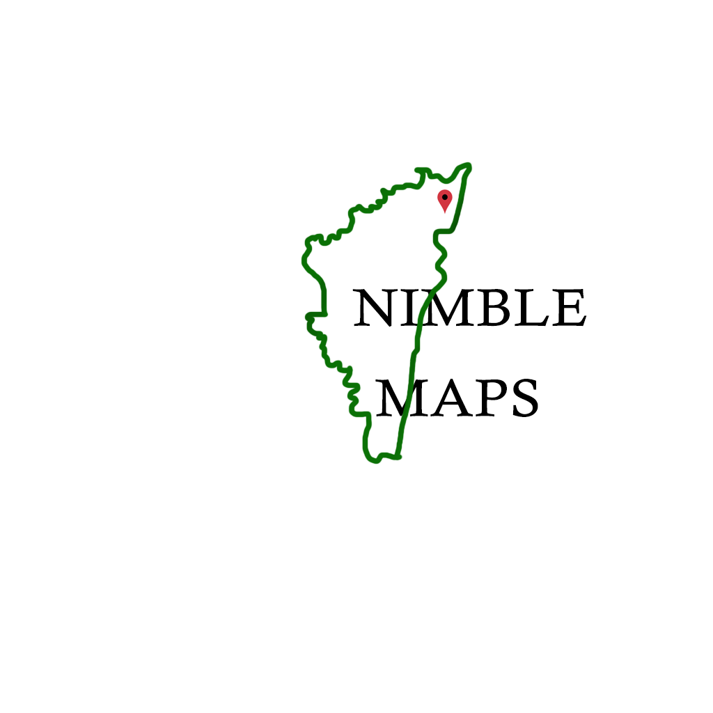

HOME
(current)
ABOUT
COMMITTEE
SPEAKER
PROGRAME
VENUE
ATTENDING
Call for Papers
Submission & Dates
Registration
Visa & Letter
AGENDA
Agenda at Glance
Workshops
One Day Tour
REGISTER HERE
CONTACT
NOISE
Timings
Day
Night
CHOOSE THE TIMINGS